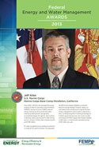

The Federal Energy and Water Management Awards recognize individuals, groups, and agencies for the outstanding use of energy- and water-efficiency technologies at Federal facilities. View a video honoring the 25 individuals and teams that received awards in 2013.
Awards to Individuals: Exceptional Service
|  |
| Download the poster: Low resolution High resolution |
Jeff Allen
U.S. Marine Corps
Marine Corps Base Camp Pendleton, California
Since 2000, Jeff Allen has managed the Marine Corps Base Camp Pendleton (MCBCP) energy program. During his tenure, MCBCP has reduced its energy intensity by 20.2% and lowered its water intensity by 48.8%. These savings were accomplished largely through Allen's efforts to develop, award, and execute 16 utility energy service contracts, which included projects worth $95 million and saved an aggregate of 352 billion Btu. He also implemented the base's first 3-kilowatt photovoltaic (PV) system in 2001 and leveraged various funding mechanisms to install 60 PV systems totaling 7.8 megawatts. Allen coordinated on many fronts to establish a successful resource energy manager program, deploy an automated meter infrastructure, expand the base energy management control system, implement a retro-commissioning effort covering an average of 2 million square feet per year, and conduct audits of the base's 16 million square feet of space leading to $80 million in projects with estimated savings of $10 million per year. As a result of Allen's leadership and dedication, MCBCP is on track to meet and exceed all Federal energy and water mandates.
| Download the poster: Low resolution High resolution |
Christine Hull
U.S. Department of the Army
Fort Bragg, North Carolina
Christine Hull, chief of the Operations and Maintenance Division at the Directorate of Public Works at Fort Bragg, has worked for the U.S. Department of Army for more than 16 years. At Fort Bragg, she ensures that members of the base energy team are included in every aspect of utilities maintenance and repair, allowing them to improve day-to-day base operations and resilience through efficiency. The base's success in keeping energy consumption down is attributed to the institutionalization of Hull's Energy "STORM" program, which "sustains" facilities by developing energy efficient projects, "trains" occupants in energy conservation practices, "operates" facilities at peak efficiency, "renews" facilities through retro-commissioning. and "measures" and "reports" energy consumption. Hull recently took the initiative to refinance an energy savings performance contract to gain $66 million in investments to improve controls and lighting power management and upgrade 12 central heating and cooling plants with a net decrease in monthly payments. She also drove the development of a Web-based application to manage and optimize work scheduling that resulted in a 4% increase in productivity in fiscal year (FY) 2012 from the prior year. Her focus on energy conservation and aggressive planning has resulted in $75.1 million in energy conservation and efficiency projects over the past three years, including $17.5 million in FY 2012.
| Download the poster: Low resolution High resolution |
Sandrine Schultz
U.S. Department of the Navy
Commander, Navy Installations Command
Washington, D.C.
Sandrine Schultz currently serves as the Navy Shore Energy subject matter expert as part of her 11 years of service to the U.S. Navy. As Navy Installations Command Energy Program manager, Schultz works to heighten energy awareness, improve energy efficiency, and meet the Secretary of the Navy's energy goals through smart investments. Schultz approved and funded 147 energy and water projects implemented in FY 2012 that resulted in total energy and water savings of 1.2 trillion Btu and 335 million gallons and energy and water cost avoidance of more than $89.1 million. She also directed the execution of six energy third-party financed projects that are saving the Navy an additional $13.6 million annually. Schultz established innovative tools, such as the Navy Shore Geospatial Energy Module, which was designed to inform Navy Shore Energy investment decisions, and the Energy Return on Investments tool, which analyzes all energy initiatives to assure accurate return on investments data. These tools are used to inform investments of limited program resources. Schultz is committed to integrating energy across all operational areas, and her contributions to the development of Navy-wide energy implementation plans were instrumental in the institutionalization of Navy policy, strategy, and energy efficiency.
Individual FY 2012 Achievements
| Download the poster: Low resolution High resolution |
Kelly Jaramillo
U.S. Air Force
United States Air Forces Europe
During FY 2012, Kelly Jaramillo, U. S. Air Force Europe (USAFE) energy program manager, oversaw 46 projects worth $14.6 million, which are estimated to save more than $5.5 million per year. Jaramillo motivated residents in military family housing to reduce energy consumption, working with Royal Air Force Lakenheath in England to pilot a program that resulted in average electricity savings of 25% and average natural gas savings of 17% in the first quarter. She also implemented a program she called Operation COOL MONEY, an initiative that eliminated 1,300 air conditioning units, enforced temperature set points, and saved about $373,000 in energy costs. Jaramillo linked energy savings to communication, leadership, and awareness. She revitalized the quarterly Headquarters Energy Management Steering Group, chaired by the USAFE vice commander and attended by USAFE directors, and implemented a video teleconference concept that enabled distant wing commanders to personally brief their energy programs. This approach maximized senior leader energy program ownership, while enabling best practices to be shared across the entire command. In addition, she initiated USAFE's first-ever internal outreach and education program through monthly Web-based training for 37 energy personnel across Europe.
| Download the poster: Low resolution High resolution |
David Morin
U.S. Air Force
Laughlin Air Force Base, Texas
While serving as energy manager of Laughlin Air Force Base David Morin in FY 2012 led the base's energy program to achieve energy and water intensity reductions of 29% and 24% over the prior year, saving $1.8 million in utility costs. Morin focused on three key areas: projects, maintenance, and individual conservation. In FY 2012, he implemented $1.3 million in projects, including a reroofing project with PV panels producing 282 million Btu; lighting and plumbing fixture upgrades; base-wide leak detection and repair; and conversion of a domestic water-fed pond into a bio-swale. Using new advanced metering, he identified anomaly power use and worked with facility managers on remedies, reducing base power outages by 29%. Morin initiated several new strategies including a base-wide reduction of irrigated areas, saving 65 million gallons of water, and midnight irrigation checks and reduction schedules. His educational efforts on base include a training block to highlight the base facility managers' role in efficiency and provide tips and standards, as well as training purchasing agents on energy- and water-efficient products. Morin's leadership culminated in the highest energy- and water-intensity reductions within his major command of 12 bases for the last two quarters of FY 2012.
Awards to Teams: Programs
| Download the poster: Low resolution High resolution |
William Kuster
John McDuffie
Dennis Svalstad
William Turnbull
Steven White
U.S. Air Force
Air Combat Command
Langley Air Force Base, Virginia
The U.S. Air Force Air Combat Command (ACC) Facility Energy Team expertly managed a comprehensive program for 16 installations focused on project execution, facility optimization, and energy accounting. Its efforts led to an energy intensity reduction of 5.9% in FY 2012 as compared to the prior year. This equated to energy savings of 538.8 billion Btu and $6.67 million in utility costs. The award of 39 energy projects had the largest impact, saving an estimated 447 billion Btu and $5.4 million annually. Retro-commissioning of 2.3 million square feet at 78 major facilities, along with energy management control system repairs and training at 12 bases will save an additional estimated 76.6 billion Btu by ensuring peak performance of energy systems. The ACC team also added 137 advanced meters to its portfolio, bringing the total to 2,264, and revamped its databases and reporting procedures to improve energy reporting accuracy from 94% to 97%. ACC developed a Facility Energy Audit and Project Development Guide and Resource Efficiency Manager (REM) Program Management Plan to ensure all stakeholders fully understand the project execution process and their role in the program's success. Monthly call-in meetings with ACC team members, base energy managers, and REMs keep the program on the front burner and facilitate sharing of best practices between bases.
| Download the poster: Low resolution High resolution |
Kate Anderson
Scott Clark
Matthew Ellis
Vincent Guthrie
Mark Hunsicker
U.S. Department of the Army
Fort Carson, Colorado
Fort Carson (also Director's Award Winner) completed several projects and instrumental planning efforts in FY 2012 that contributed greatly to its visionary net-zero objectives as well as reducing its energy intensity by 14.7% and water intensity by more than 8% from the respective baselines. The site partnered with the National Renewable Energy Laboratory to develop a Net-Zero Assessment and Recommendations report that assessed the opportunities to increase energy security and renewable energy usage. Pacific Northwest National Laboratory helped develop a water-balancing report and strategy toward Fort Carson's net-zero water strategy. The U.S. Army Corps of Engineers also worked with Fort Carson to conduct a non-potable water system study on using wastewater effluent to expand its existing non-potable irrigation system. Fort Carson implemented lighting retrofits, chiller replacements, and the expansion of the energy management control system in FY 2012, estimated to save more than 3.4 billion Btu and $60,000 annually. The site also constructed a Leadership in Energy and Environment Design (LEED) Platinum-certified facility and a facility striving for LEED Gold certification. Further, Fort Carson partnered on two U.S. Department of Defense efforts to demonstrate leading-edge technologies for combined heat and power, as well as biomass gasification.
 |
| Download the poster: Low resolution High resolution |
Ronald Allard
Joseph Eberly
Amy Hudson
James B. Shaffer
U.S. General Services Administration
National Capital Region
Regional Energy and Sustainability Branch
Washington, D.C.
The newly reformed Regional Energy and Sustainability Branch of the U.S. General Services Administration's National Capital Region supports 95.6 million rentable square feet of space in 190 Federally-owned buildings. It is responsible for writing energy- and water-saving policies and procedures and overseeing their implementation, tracking effects on regional energy and water efficiency, performing energy audits, and coordinating energy- and water-efficiency projects throughout the region. In FY 2012, the region's energy and water intensity improved by 9% and 6%, respectively, from the prior year, with utility cost savings of more than $10 million. These results were realized through the effective implementation of several initiatives put in place by the branch during the last two years, including a new regional energy policy; a monthly energy newsletter; a robust energy audit program; energy efficiency rebates; energy savings performance contracting guidance; a solar renewable energy credit sale program; ENERGY STAR certification; a Leadership in Energy and Environmental Design certification program for existing buildings; and an incentivized energy funding account. These programs were accomplished at an investment cost of $30,000, in addition to the day-to-day efforts of the small team to provide ongoing subject matter expertise to the region to ensure ongoing success.
| Download the poster: Low resolution High resolution |
In FY 2012, Naval Surface Warfare Center Carderock Division (NSWCCD) implemented more than $20 million in projects across its facilities at nine sites, resulting in $4.3 million in annual cost avoidance. Its energy program is corporately managed with resource sharing and best practices utilized across its facilities. Projects executed during FY 2012 include two military construction (MILCON) energy enhancement projects, repairs to major heating and cooling systems, steam decentralization, and building envelope repairs. The MILCON projects included construction of a Leadership in Energy and Environmental Design Gold-certified facility in West Bethesda, Maryland, equipped with a 21 kilowatt PV array, solar domestic hot water, and a vegetative roof. High-pressure natural gas infrastructure was provided for the newly constructed Electric Drive Test Site, which reduces both costs and greenhouse gas emissions over the petroleum fuel alternative. With the successful implementation of these initiatives, continued development of new projects, and diligent monitoring of direct digital control systems, NSWCCD is on track to meet its mandated energy reduction goals. As of FY 2012, NSWCCD reduced its energy intensity by more than 22%, saving 97 billion Btu over the FY 2003 baseline.
| Download the poster: Low resolution High resolution |
U.S. Department of Energy
Oak Ridge National Laboratory
Oak Ridge, Tennessee
The efforts of Oak Ridge National Laboratory's (ORNL) water resource management program resulted in savings of 255 million gallons of water and $300,000 in FY 2012, a 30% reduction from the prior year. The program comprehensively addresses minimizing water use, maximizing water reuse, and maximizing water quality by establishing and updating the lab's policies and plans that provide a foundation for coordinated lab efforts. ORNL integrates water resource management into new construction, renovations and retrofits, operations and maintenance, sustainable landscaping, and research and development. Recent energy savings performance contract projects include replacing heavy water-using equipment with low-flow fixtures and replacing the central compressed air plant with a more efficient facility that used an evaporative fluid cooler system, resulted in water savings of almost 170 million gallons annually. ORNL's campus-wide "Lab within a Park" approach protects water quality through native landscaping, minimizing runoff, and improving the management of riparian zones flowing through the campus. Overall the program has reduced ORNL's water intensity by almost 36% from the 2007 baseline. With plans that include eliminating additional once-through cooling and repairing leaks in the water distribution system, ORNL's projected potable water intensity for 2020 is more than a 50% reduction.
| Download the poster: Low resolution High resolution |
U.S. Air Force
22nd Operations Group Fuel Efficiency Office
McConnell Air Force Base, Kansas
During FY 2012, the 22nd Operations Group Fuel Efficiency Office (FEO) designed and implemented several measures, including a focus on institutional change, to reduce inefficiency in fuel management of the KC-135 aircraft, saving the Air Force $4.3 million during a 42% rise in local sorties (the deployment of aircraft for missions of national defense or aircrew proficiency). These efforts included reducing KC-135 landing fuel by 5,000 pounds per sortie, resulting in a decrease in fuel use of 1.94 million gallons per year, changing the KC-135 standard landing configuration to save 50 pounds of fuel per approach, and implementing a new training configuration that reduced aircraft basic weight by 1,600 pounds. FEO also incorporated Mission Index Flying (MIF) software into flight planning to reduce hourly fuel burn by 700 pounds per hour, maximized simulator usage for training to minimize fuel use, and trained 400 aircrew members on the importance of fuel management and how to execute it using the MIF program and fuel trackers. FEO's efforts were recognized by the Air Force Air Mobility Command in 2012 and have become the benchmark by which the other Air Force units are gauged.
Awards to Teams: Projects
| Download the poster: Low resolution High resolution |
Dale Allard
Steven Benson
John Elliott
Ryan Jeter
Ron Stertzbach
U.S Department of Veterans Affairs
Chillicothe VA Medical Center
Chillicothe, Ohio
In May 2012, the Chillicothe VA Medical Center put into service the U.S. Department of Veterans Affairs' (VA) first operational biomass boiler plant, which saved 10 billion Btu of natural gas and more than $170,000 during the remainder of FY 2012 compared to FY 2011. The new innovative system provides most of the campus facility steam needs, while generating on-site electrical power. It produced 576,000 kilowatt-hours from the 400 kilowatt turbine in FY 2012. Project savings are expected to increase in FY 2013 as the facility operations staff maintains this state-of-the-art plant as the primary steam source for the campus. The plant was funded in part by the American Reinvestment and Recovery Act and replaced an aging, inefficient boiler plant and steam-distribution system. This renewable energy project was completed as part of an overall phased implementation plan for the campus to promote sustainable and cost-effective practices for the next 40-plus years. It will enable cost savings to be repurposed for veteran care and provide back-up for campus heating to maintain the emergency response and preparedness for the VA and the region.
| Download the poster: Low resolution High resolution |
Charlie Dockham
Donna Maffeo
Sean Orgel
Patrick Ross
Sarah Wenninger
U.S. General Services Administration
New England Region
Boston, Massachusetts
In FY 2010, the U.S. General Services Administration New England Region entered into a design and build contract for the Cleveland Federal Building and the connected Rudman Courthouse in Concord, New Hampshire. The project implemented comprehensive upgrades and new energy-efficient, renewable-energy, and water-conserving measures that saved about 3.7 billion Btu and 137,000 gallons in FY 2012. A lighting redesign and retrofit was completed using the latest high-performance fixtures, ballasts, and lamps that reduce lighting energy density by more than 20%, for a projected minimum energy savings of about 594 million Btu per year. The new systems make use of dimmable ballasts, advanced lighting controls, and connection to the building management system to control heating, ventilation, and air conditioning (HVAC) demand. The roofing was replaced on both buildings with a 60 kilowatt grid-tied building integrated PV roof system at the Cleveland Building and an extensive modular tile vegetative roof system at the Rudman building. Other measures included HVAC upgrades, recovery of waste heat for domestic water heating and a parking lot snow melt system, building automation system upgrades, plumbing retrofits, and rainwater capture systems for landscaping.
| Download the poster: Low resolution High resolution |
U.S. Department of the Navy
Commander Fleet Activities Yokasuka
Yokosuka Naval Base, Japan
Commander Fleet Activities Yokosuka (CFAY) deployed a strategy to use more advanced technologies to improve energy efficiency across its large facility, executing $7.2 million in projects in FY 2012 to save about 7.9 billion Btu, 1.3 million gallons of water, and $625,000 in utility costs annually. CFAY completed an extensive energy retrofit project to replace existing exit signs with more than 5,600 light emitting capacitor (LEC) exit signs throughout the main base and all CFAY satellite locations-representing the largest utilization of LEC technology to date across Federal Government sites. CFAY also installed two large solar energy projects, including one crystalline PV system and a copper indium gallium diselenide (CIGS) thin-film building integrated photovoltaic (BIPV) system. Using the CIGS technology incorporated into flexible thin-film panels enabled the site to adhere panels to an arched roof not suitable for traditionally-mounted PV panels. The 396-kilowatt system is the U.S. Navy's largest solar BIPV thin-film installation and the largest CIGS-type solar PV system in all of Asia. CFAY has already reduced its energy intensity by 58% relative to the FY 2003 baseline, and the total of 746 kilowatts installed in FY 2012 helps CFAY further reduce its dependence on the Japanese power grid.
| Download the poster: Low resolution High resolution |
Guy Lunay
Kevin Myles
Cullen Rabel
Elizabeth Taylor
Mark Trimarchi
U.S. General Services Administration
Greater Southwest Region
Fort Worth, Texas
During FY 2012, the U.S. General Services Administration's Greater Southwest Region used three energy savings performance contracts (ESPCs) to leverage American Reinvestment and Recovery Act funds to deliver $68 million in high-performance green buildings projects. For this total investment, of which $15.1 million was third-party financed, the region accomplished energy and water conservation projects in 75 facilities, saving an estimated $4.5 million per year in utility costs. Bundling renewable projects with shorter payback measures allowed for inclusion of 13 PV systems totaling 1.5 megawatts in capacity, two solar thermal systems, and one wind turbine, together producing about 7.8 billion Btu in electricity. In total, all projects yielded about 155.7 billion Btu and 25 million gallons of estimated energy and water savings in FY 2012. The ESPCs were used to bundle facilities spread throughout Texas, New Mexico, Louisiana, Arkansas, and Oklahoma into groups, saving money through economies of scale. This allowed the region to implement energy and water conservation projects in smaller or more remote facilities where they otherwise may not be cost-effective using stand-alone projects. Further, the design-build nature of the ESPCs allowed the projects to be developed and managed by fewer employees than through traditional construction methods.
| Download the poster: Low resolution High resolution |
U.S. Marine Corps
Marine Corps Recruit Depot San Diego
San Diego, California
During FY 2012, Marine Corps Recruit Depot San Diego (MCRDSD) completed several projects resulting in a 22% reduction in energy intensity and a 30% reduction in water intensity from the previous year, saving $872,000 in utility costs. The Depot constructed 3 new Leadership in Energy and Environmental Design Platinum-certified buildings with gray water recovery systems, induction lighting with advanced lighting controls, and a 990 kilowatt PV system designed to offset 75% of the connected electrical load. In total, 2.69 megawatts of new PV generation were completed, including a 1.7 MW solar farm, bringing the Depot's total PV system size to 3.6 megawatts. MCRDSD also installed a synthetic turf football field, a smart metering system, and an E85 gas pump in FY 2012. In partnership with Navy Facilities Engineer Command, the depot is hosting a project to collect black water from the existing sewer system and filter it through a tertiary water treatment system to provide usable water for subsurface irrigation, which will save about 365,000 gallons of potable water annually. Overall, these and other projects helped MCRDSD reduce its energy and water consumption by 35.8 billion Btu and 41.3 million gallons from the prior fiscal year.
| Download the poster: Low resolution High resolution |
Frank Cope
Bethany Mills
William Nelligan
Jodie Petersen
Scott Thomas
U.S. Department of the Interior
National Park Service
Mesa Verde National Park
Cortez, Colorado
At Mesa Verde National Park, the National Park Service constructed a new Leadership in Energy and Environmental Design (LEED) Platinum-certified visitor and research center in FY 2012. Performance goals for siting, energy, water, materials, and indoor environmental quality were set at the earliest stages of the building delivery process. Achieving LEED Platinum certification was a difficult feat due to the special challenges of a curatorial facility that is also open to the public. Temperature, humidity, lighting levels, and contaminants must be carefully controlled, requiring innovative systems, precise design engineering, proper construction, and extensive commissioning to secure the priceless and irreplaceable artifacts. The building includes improved envelope; reduced lighting; advanced controls; high-efficiency ground-source heat pumps; energy recovery technology; chilled beams and slabs; and on-site renewable energy systems. A 67 kilowatt photovoltaic system, solar water heating system, and a micro-hydro turbine are able to provide 95% of the building energy requirements, or 627.9 million Btu annually. Landscape irrigation has been eliminated, and a wastewater treatment project and installation of dual flush water closets and low flow fixtures has reduced the site's potable water use by 40.7% from the baseline.
| Download the poster: Low resolution High resolution |
Linda L. Collins
Luke McAuliffe
Chris McCall
Daniel Morrison
U.S. General Services Administration
Public Buildings Service, Energy Division
Washington, D.C.
In January 2012 the General Services Administration's (GSA) Energy Division ran the first ever forward auction for demand response services by a Federal agency, resulting in awarded contracts expected to generate revenues of $1.5 million for the GSA and the Department of Veterans Affairs (VA). To date, the majority of Federal Government agencies participating in energy curtailment programs utilized a process through which they requested quotes from a handful of providers, then negotiated revenue shares and performance metrics on the provider's terms. GSA's competitive forward auction included approximately 24 megawatts (MW) of requirements, or about 8 MW annually over a three year term, for GSA and VA facilities that had previously enrolled in demand response programs under commercial terms dictated by providers. GSA received 70 bids from 10 approved demand response providers as a result of the auction. Of equal importance, GSA was able to shift all cost and performance risk from the Government to the providers. While dictating performance terms and shifting risk, GSA was able to increase the Government's share of revenues from 75% under the previous commercial agreements to 91.8% under GSA's terms, which can in turn be re-invested into energy reduction projects.
| Download the poster: Low resolution High resolution |
Corrine Kegel
Jane A. Kipp
Dale Reckley
U.S. Department of Agriculture
Forest Service Region One
Missoula, Montana
The U.S. Department of Agriculture Forest Service Region One executed a 13-year, $2.6 million energy savings performance contract (ESPC) in FY 2012, exceptional for its complexity, breadth, and logistical challenges. Forest Service Region One has more than 4000 buildings covering 25 million acres in the states of Montana, Northern Idaho, and South and North Dakota. The ESPC represents a major departure from the Region's former methods. Prior to the ESPC, energy conservation projects were small, localized efforts that applied one or two energy conservation measures at a particular site-slow progress to affect even a modest number of the Region's facilities. The new ESPC addresses 500 facilities at 62 sites served by 19 different utility providers, installing programmable thermostats, heat pumps, greenhouse furnaces, lighting, vacancy sensors, attic and foundation insulation, infiltration reduction measures, and a 4.9 kilowatt solar photovoltaic system. In total the projects are expected to save about 12.2 billion Btu and $250,000 in utility costs per year. This ESPC has already been used as a template for proposed projects for two other Forest Service regions.
| Download the poster: Low resolution High resolution |
John Eichhorst
John Fehr
M. Renee Jewell
Kathleen Kreyns
U.S. Department of Agriculture
San Dimas, California
In FY 2012, the U.S. Forest Service completed upgrades to the San Dimas Technology and Development Center (SDTDC), resulting in the first net-zero energy facility in the U.S. Department of Agriculture's portfolio. Net-zero energy status was accomplished by first installing numerous energy saving measures to the 48-year-old facility, including replacing the original heating, ventilation, and air conditioning system and installing a high efficiency boiler, energy efficient fluorescent lamps, plug load strips, and occupancy sensors. The facility then installed a 302 kilowatt PV system which is connected to the Southern California Edison (SCE) electrical grid. The PV system generates more than 100% of the facility's energy needs, and SCE applies a credit to both SDTD.C. and the Angeles National Forest Headquarters for excess energy the system generates. From July 2012, when the system first came on line, through the end of the calendar year the system generated more than 800 million Btu of renewable energy and resulted in a credit to SDTD.C. and to the Angeles National Forest SCE accounts of more than $13,000.
| Download the poster: Low resolution High resolution |
Shannon Blackburn
Mary Crist
Kim Forrest
Beth Ludvigsen
Bob Parris
U.S. Department of the Interior
U.S. Fish and Wildlife Service
San Luis National Wildlife Refuge Complex
Los Banos, California
The U.S. Fish and Wildlife Service completed its first net-zero energy Leadership in Energy and Environmental Design Platinum-certified building in FY 2012 at San Luis National Wildlife Refuge Complex. During the first year of operation, the 16,500 square-foot Headquarters and Visitor Center produced 352 billion Btu via nine solar PV arrays totaling 59.2 kilowatts. Technologies and strategies, such as structural insulated panels, a cool roof, tubular daylighting devices, clerestories, skylights, and operable low-e glazed windows, passive and evaporative cooling, and energy-efficient lighting yield energy performance better than 30% compared to an average building. Water use is reduced more than 35% with low-flow and waterless plumbing fixtures saving approximately 396,000 gallons annually. Xeriscaping, native plants, limited drip-irrigation, and stormwater containment conserve water outdoors. Low-volatile organic compound carpets, paints, and adhesives provide a healthy indoor work environment. Further, many building elements are composed of recycled materials including countertops, ceiling tiles, wallboard, wheat straw cabinetry, fly ash in the concrete, and certified sustainably harvested lumber, with 90% of construction waste recycled. Interpretation of the facility's green features is highlighted by dynamic, interactive exhibits for an estimated 150,000 visitors annually.
| Download the poster: Low resolution High resolution |
Ric Alesch
Jill Jones
Meghan Kish
Forrest McNabb
Lisa Soghor
U.S. Department of the Interior
National Park Service
Santa Monica Mountains National Recreation Area
Thousand Oaks, California
The National Park Service (NPS) designed and constructed a certified Leadership in Energy and Environmental Design Platinum-rated visitor center for the Santa Monica Mountains National Recreation Area (NRA). The new facility is the first grid-tied, net-zero visitor center completed in the national park system.. It is also the first facility in the system designed with all light emitting diode (LED) electronics for all exterior and interior lighting fixtures. The 7,000 square foot building is heated and cooled by a highly efficient ground and water source heat pump system using an existing artificial pond as the primary heating and cooling source. A 94 kilowatt PV system provides all the energy needs for the facility. In fact, the PV system produced 310 billion Btu in the first year, or about 2.5 times net-zero. Surplus energy from the system helps to offset the carbon footprint from other facilities in the NRA. Extensive natural lighting along with the high-efficiency LED lighting with a daylight dimming system keeps electricity use at a minimal level. The facility was developed in partnership with California State Parks and a local park agency, the Mountains Recreation and Conservation Authority.
| Download the poster: Low resolution High resolution |
U.S. Air Force
4th Civil Engineering Squadron
Seymour Johnson Air Force Base
Goldsboro, North Carolina
The Leadership in Energy and Environmental Design Gold-rated Seymour Johnson Support Center project, completed in FY 2012, consolidated five functional organizations into a single facility to reduce energy consumption by 60% and lower utility costs by almost 50%, saving 3.6 billion Btu and $36,000 in the first year. Much of the efficiency was gained through the installation's first variable refrigerant-flow HVAC, which provides highly efficient heat and cooling year-round by precisely regulating refrigerant flow to maximize system efficiency regardless of building load and climate. This system also improves comfort by maintaining precise zone settings closer than conventional equipment. The HVAC system, combined with other energy savings measures, including an improved thermal envelope and high-efficiency lighting, reduce building energy use by almost 31% below standard construction of a comparable building. Installation of low-flow water fixtures and equipment reduced potable water use by 54% in FY 2012, saving more than 226,000 gallons. Furthermore, the project made possible the demolition of four buildings, resulting in an 18% reduction in overall building footprint.
| Download the poster: Low resolution High resolution |
Bob Bellagh
Richard Eschenbach
Edward J. Hernaez
Kieran McInerney
Laura Smolinski
U.S. Department of Homeland Security
U.S. Coast Guard (Nationwide)
During FY 2012, the U.S. Department of Homeland Security's U.S. Coast Guard completed an aggressive, agency-wide advanced metering infrastructure project, with estimated annual savings of about 19.8 billion Btu and $624,000. The project installed a robust meter network that provides wireless electricity data from 1,960 meters spread over 220 Coast Guard sites. The meters transmit time interval electrical consumption data from discrete sources, such as individual electrical panels, buildings, and vessel shore ties, to a local data acquisition server. While Federal mandates emphasize that meter data can drive facility energy reductions, the Coast Guard is going further by implementing programmatic enhancements in energy analysis. Data from the advanced meters is being used to identify opportunities for efficiency improvements, verify savings of efficiency measures, influence an energy conscious culture, and streamline energy reporting processes. The Coast Guard now has detailed data for the sites that account for 75% of its total shore electricity consumption. Conservative estimates attribute a 2% reduction in overall energy consumption due to the installation of meters. At this rate, the $8 million project will pay for itself in less than 13 years.
| Download the poster: Low resolution High resolution |
Chris Manis
Randy Monohan
Laura Nelson
Mark Rodriguez
Mick Wasco
U.S. Marine Corps
Marine Corps Air Station Miramar, California
After five years of planning and coordination with several stakeholders, in FY 2012, Marine Corps Air Station Miramar completed a landfill gas (LFG) and power purchase agreement (PPA) that brings the installation's energy consumption to 50% of its load generated from renewable energy on-site. The LFG PPA is a 15-year agreement to purchase 3.2 megawatts of renewable power, which generates 94.3 billion Btu per year. The LFG plant extracts gas from the 476-acre Miramar Landfill, owned by the U.S. Marine Corps and leased and operated by the City of San Diego. Miramar and Naval Facilities Engineering Command contracted directly with Fortistar LLC and the City of San Diego to purchase the power from the LFG-generating plant. A separate project constructed three miles of electrical distribution lines to transmit the power produced at the landfill to a transformer that provides power to multiple critical facilities. The success of this project was a key factor in the U.S. Department of Defense allocating $18 million in FY 2014 special military construction funds to install a base-wide micro grid. The micro grid will use LFG and traditional generation to provide energy independence for the entire base, helping Miramar to meet its aggressive goal to be energy independent by FY 2017.
Director's Award
U.S. Department of the Army
Fort Carson, Colorado
Fort Carson's energy program demonstrates the key elements of a solid, successful energy management program, including sound analyses and planning, essential policy and practice changes, enduring efforts to design and implement projects with goals that exceed existing code and mandates, strong employee empowerment and engagement, and proactive maintenance and optimized operations. The nomination clearly illustrated a program with resolve and determination, aiming high and taking well-analyzed and planned incremental steps toward its ultimate goal of Net Zero buildings while successfully utilizing strategic interagency partnerships and performance contracting opportunities.